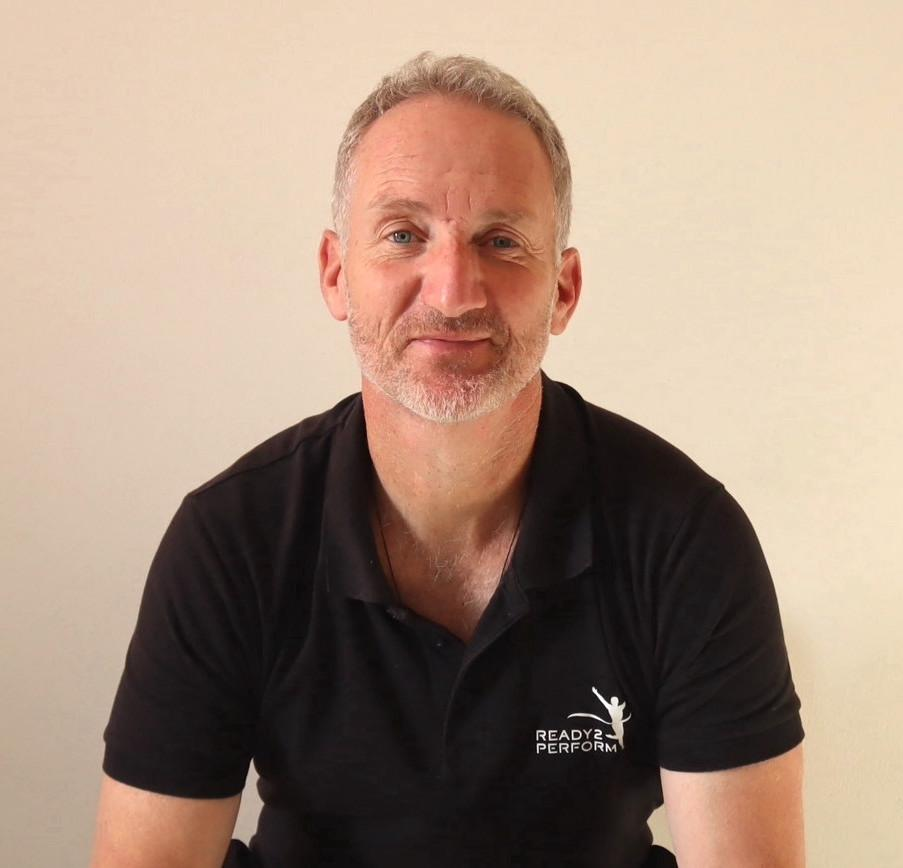
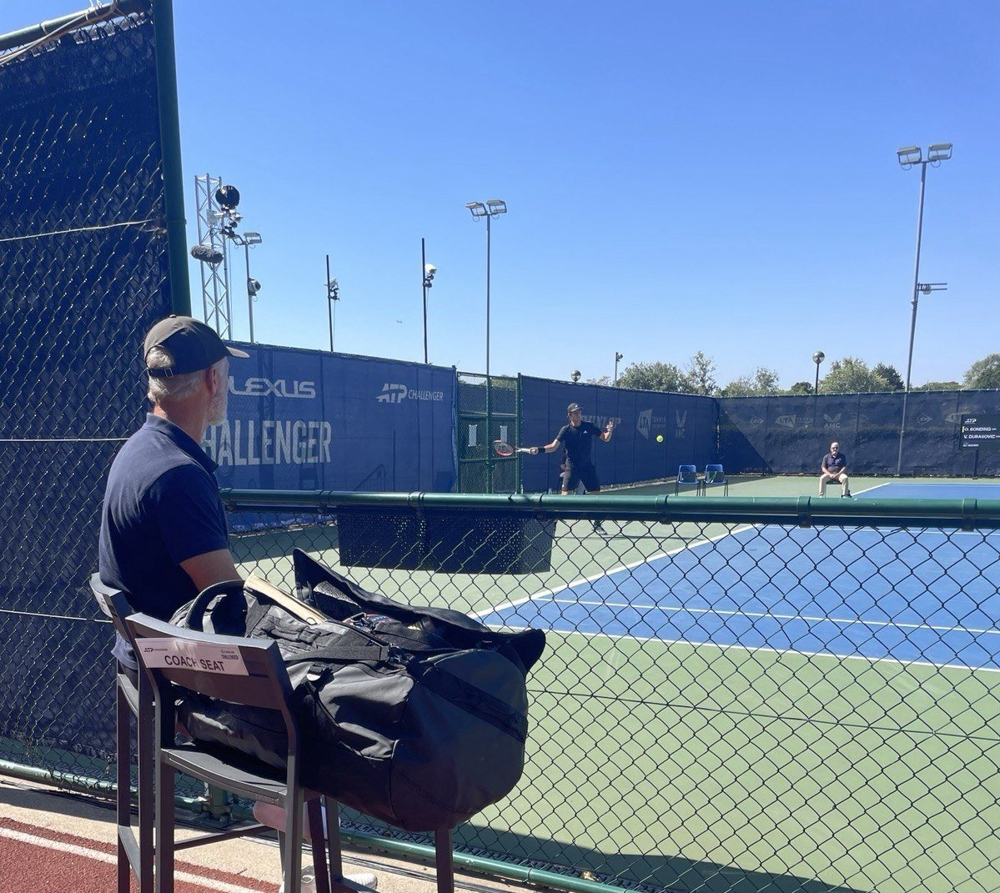
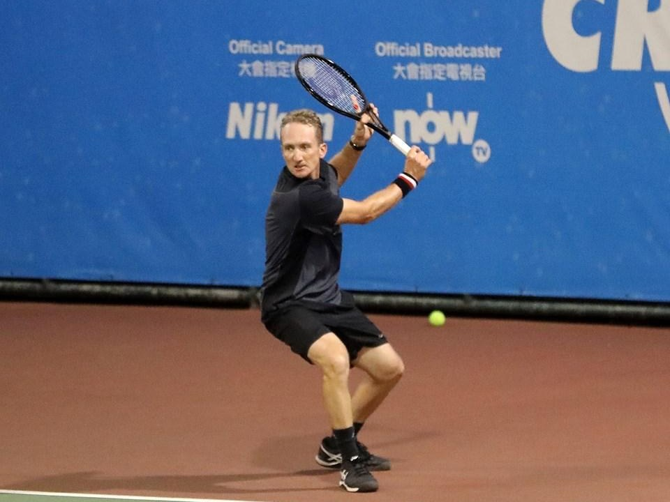
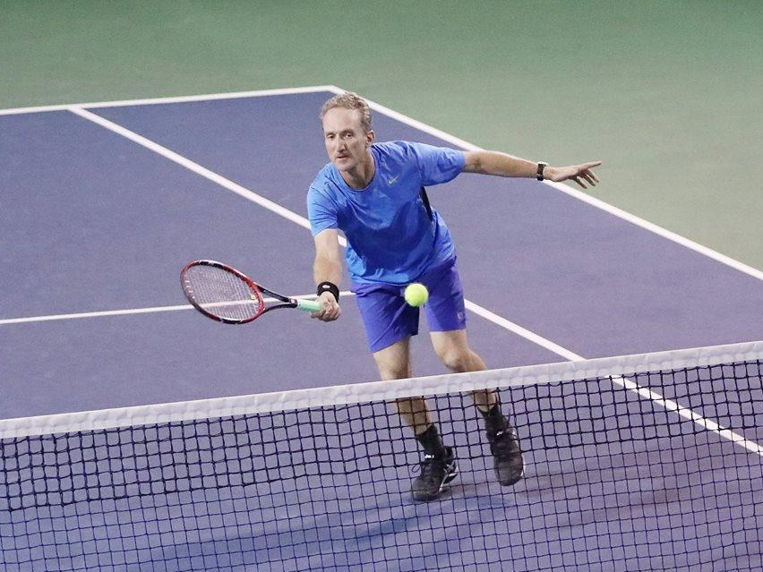
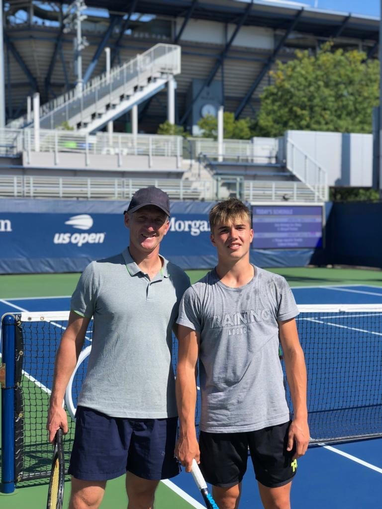

About
An ATP coach who learned the hard way that performance doesn't come from copying a model. It comes from finding the way your own body and mind were built to play.

The chair says coach. The job is to watch.
Courtside at an ATP Challenger.
My story
I turned pro and chased the tour from the age of six. My training philosophy was brutally simple: go hard, go hard again, push until I collapsed. Exhaustion felt like proof I'd done enough. The price was high. Over-training, constant injuries, and a young man who was fit, tough, and often injured and depressed.
Everything I got wrong became what I now teach. As a teenager I copied a pro's advice to "just run," ran myself into a torn Achilles, and watched rivals outlast me on court even when I beat them in fitness tests. Fit on paper, gassed in play. That puzzle drove 25 years of asking a better question: not "how do I push harder?" but "how does this actually work, for this person?"
A turning point in Japan in 2002 led me to finish first in my class as a coach, and later to rebuild my whole life in Hong Kong. The hardest years of that period are exactly why my coaching is built on the mind as much as the body, and why it's individual, sustainable, and human.
My playing years


My philosophy
Find how your own body is wired to move, and build technique that fits it.
Train calm deliberately, so it shows up under pressure instead of disappearing.
Build confidence on what you control, and play the important points well.
Background
Former ATP-level player (best ranking around 680; runner-up, World Championship +35, 2017). Foundational coach to Arthur Fery, Wimbledon semi-finalist 2026, working together since 2017.
Trained in movement profiling, StrongFirst Elite instructor, NLP practitioner, and certified yoga teacher.
Wrote The Confidence Journey, Ta Réelle Victoire, and Your Natural Tennis, plus free ebooks on endurance, recovery, strength, and mobility.

"Benoit is a supercoach, period."
Arthur Fery, Wimbledon semi-finalist, 2026
Whether you're chasing a ranking or simply want to enjoy tennis at your best, it starts the same way: understanding you.